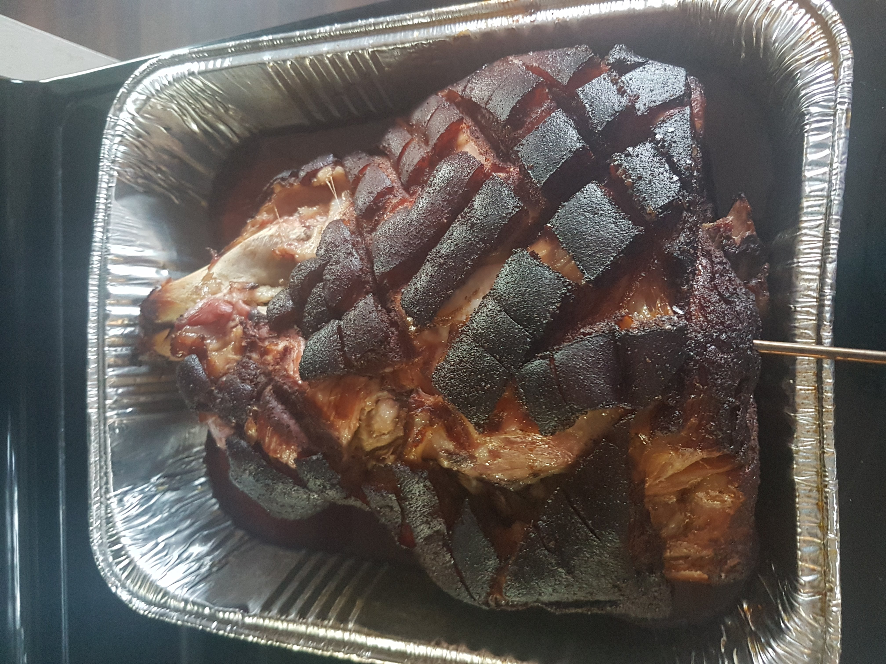

Pulled Pork Recipe

Description
A crowd favorite, and it's so simple to make.
Ingredients:
- Pork shoulder aka pork butt
- 1 cup of brown sugar
- 1/2 cup kosher salt
- 4 tablespoons smoked paprika
- 2 tablespoons coarse black pepper
- 1/2 tablespoon cumin
- 1/2 tablespoon onion powder
- 1/2 tablespoon garlic powder
- 1 teaspoon cayenne pepper
- Mustard
- 3 carrots
- 2 stalks of celery
- 2 bay leaves
- 8 ounces of mushrooms
- 1-2 tbsp of rosemary or thyme
Steps:
- Trim excessive fat from the pork shoulder.
- Mix dry ingredient to make a rub.
- Slather the pork shoulder in mustard - this will act as a binder.
- Cover the pork shoulder with the rub.
- Set the smoker to 250F.
- Place the pork shoulder on the smoker, fat side up.
- Once there is a nice bark on the outside of the pork shoulder, remove it from the smoker and wrap it. Before wrapping, add moisture and more rub.
- Cook until the internal temperature is between 200-205F.
- Remove from the smoker and let it rest anywhere from 30-120 minutes.
- Pull it apart and serve it with your favorite coleslaw.